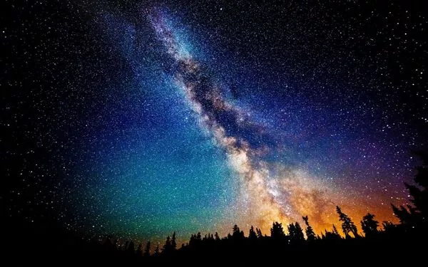
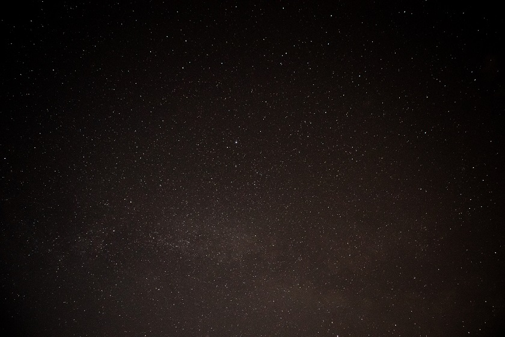
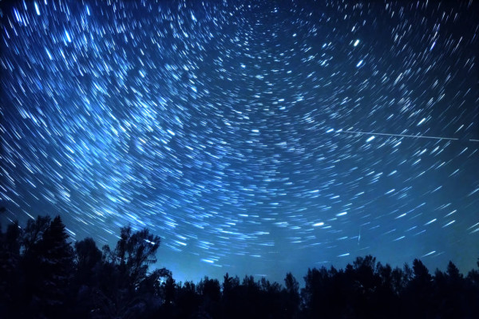

How to shoot the stars
There seems to be nothing difficult in ordinary photography. We just take the camera, point it at the object of interest to us and press the trigger. But there is a category of photography, and I hope you will agree, which requires knowledge of the basic principles. In this article, we'll focus on something a little more advanced. We will learn how to photograph the starry sky. This process is also known as astrophotography.
For photographing the stars, we will dig much deeper. We will learn how to use manual control of the camera, what to choose aperture, shutter speed, ISO, etc. By the way, for this purpose, be sure to choose the night mode. This will give you more flexibility when editing the final image. If you still have doubts, let's dwell in more detail.
What we need:
Tripod - we're going to be dealing with a shutter speed of tens of seconds, so this item is more than useful. We need to stabilize the camera. Manual Camera - We will be manually adjusting the ISO and shutter speed, which is of great importance for photographing the stars. Wide aperture lens - We need a lot of light and f / 2.8 is fine. Seems to be a fuzzy zone for astrophotography. When combined with an ultra wide angle lens, depth of field won't be an issue. You can already start with such a set. But of course there are still a lot of things left to discuss.
Location!
So, it's not enough just to collect all the equipment, you need to find the right place to successfully photograph the night sky. Light pollution is a major problem in astrophotography. If you live in a large city, you will have to drive for at least an hour to get away from the light. Even a city with a population of about 30 thousand people at a distance of several tens of kilometers can still lead to some interfering light pollution. Let's not forget that we are going to photograph the sky, therefore, for a successful choice of location on earth, we also focus on the position of the stars and constellations in the sky. This is great for the visual perception of the photo. You can use an iPhone app called Starwalk to track celestial bodies. For example, a photograph of the Milky Way can have an amazing visual effect.
Basic settings
When photographing these tiny points of light, we need as much lighting as possible. Therefore, it is important to use a combination of high ISO, wide aperture and slow shutter speed. For kayaking under the stars, an ISO of 1250 was used with an aperture of f / 2.8 and a shutter speed of 30 seconds. As you can see, there is a bit of light pollution on the lower right side of the photo from the city, which is about 30 minutes away.
To minimize light pollution, you need to figure out where it is coming from. The best way to do this is to take several consecutive shots across the entire horizon using the highest ISO setting. We just decrease the time it takes for each frame. We will not use these images in the final stage, but they play an important role in letting you know which parts of the horizon are off limits. As for the holding time, it is best to hold as little as possible. As much as possible. Otherwise, given the rotation of the planet, the position of the stars will change. For example, if you look closely at a photo taken with a 30 second exposure, you can see some movement in the stars. Below we see a somewhat exaggerated photograph of star trails.
Post-processing
The night sky imaging can be a little intimidating. Don't expect overwhelming results from your first try. As we have already noted, use RAW-format in the camera, if it is provided in it, when you are going to shoot a starry sky. The image above is specially presented in two versions to clearly show the difference before and after processing. LR4 tool settings used. The experiment continues until you are happy with the result.